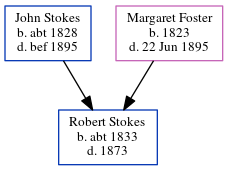

Robert Stokes c1833 - 1873
[ Home ] | [ Calendar ] | [ Surnames Index ] | [ Census Index ] | [ Family History ]The child of John Stokes and Margaret Foster, Robert Stokes, the three times great-uncle of Michele Copp (née Phillips), was born in Athlone, Ireland c. 18331.In 1853 he traveled from Liverpool, England to New York, arriving 13 May.
He died in 1873 in the USA.
Parents
- John Hughes was born c. 1828
- Margaret was born in 1823
Citations
- New York Passenger Lists, 1820-1957 Online publication - Provo, UT, USA: The Generations Network, Inc., 2006.Original data - Passenger Lists of Vessels Arriving at New York, New York, 1820-1897; (National Archives Microfilm Publication M237, 675 rolls); Records of the U.S. Customs Service, R
Family Tree
Generated by ged2site. Last updated on Jun 6, 2024